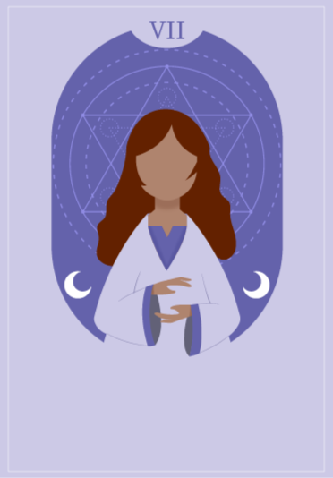

Tres formas de usar tu ilustración. Las bandas de abajo representan el ~20% libre que hay que dejar en la ilustración para el título. La C lleva la esferita ámbar entre las manos (la idea de la alquimia).

El diario imperfecto de una creadora
Isabel · Alquimia Lab
A · Carta del tarotBanda lavanda translúcida: la ilustración respira y se lee como carta. Ideal si harás serie.
Alquimia Lab presenta
El diario imperfecto de una creadora
Isabel
B · Editorial minimalFranja color papel con título en itálica: look libro independiente, muy legible en miniatura.
El diario imperfecto de una creadora
La alquimia de empezar de nuevo
C · Esferita ámbar ✨La A + luz ámbar pulsando entre las manos: el detalle que se recuerda. (La posición se afina en tu archivo final.)